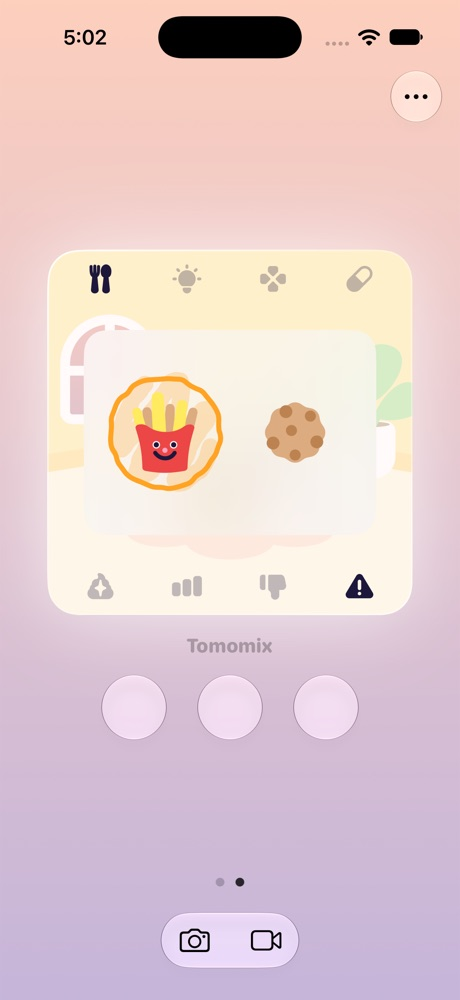
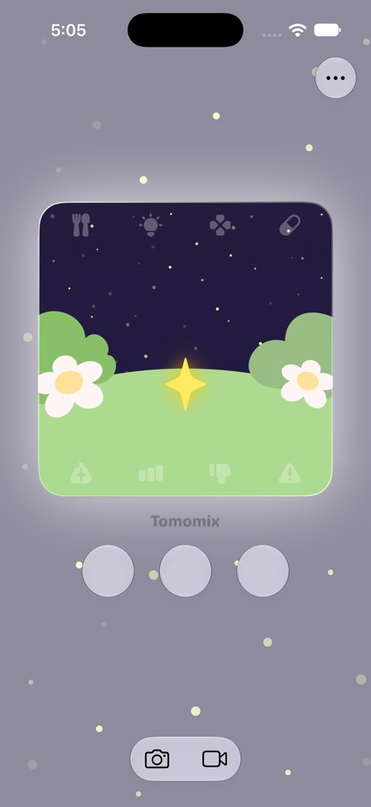

Meet your tomomix
An original pet with its own characters, art and world. It's completely free, with nothing extra to buy.




Born from a star
Tap to catch a shooting star, name your baby, and watch it grow into one of 19 characters. How you care for it decides who it becomes.
Everyday care
Meals and snacks, bedtime, cleaning up, medicine and a little discipline. A memory game, Follow Me, keeps it happy.
Lives in your pocket
Time keeps passing when the app is closed, and gentle notifications tell you when it needs you. Pause it whenever life gets busy.
Your childhood toy, back again
Own a classic virtual pet toy? Import its software and play that exact toy on your phone, with its original sounds, menus and timing. The app doesn't include any toy software. You bring your own.
Always alive
Your pets keep living while the app is closed and catch up the moment you come back.
Visit a friend
Connect Nearby lets two phones meet over the air, just like the real toys' link feature.
Live Translation
Many of these toys only exist in Japanese. Tomomix can show an English translation right on screen (beta).
Make it yours
An LCD look with scan lines, a glowing Ambient Background, light and dark mode, and custom art for first-generation toys.
Widgets
See your pet on your Home Screen and Lock Screen, and how long it's been since you checked in.
Automatic backups
Hourly and daily backups of every pet, ready to restore anytime. Export and import save files too.
Fair and simple
Tomomix is free to download. Premium is a single, optional purchase that helps keep the app going. No subscription, no ads.
| Free | Premium (one-time) |
|---|---|
| Your tomomix, with everything included | Everything in Free |
| One classic toy | More than one classic toy |
| Pause, catch-up, notifications, backups | Ambient Background, Live Translation, Fast-Forward |
| Connect Nearby, Downloads | Photos and videos of classic toys, widgets |